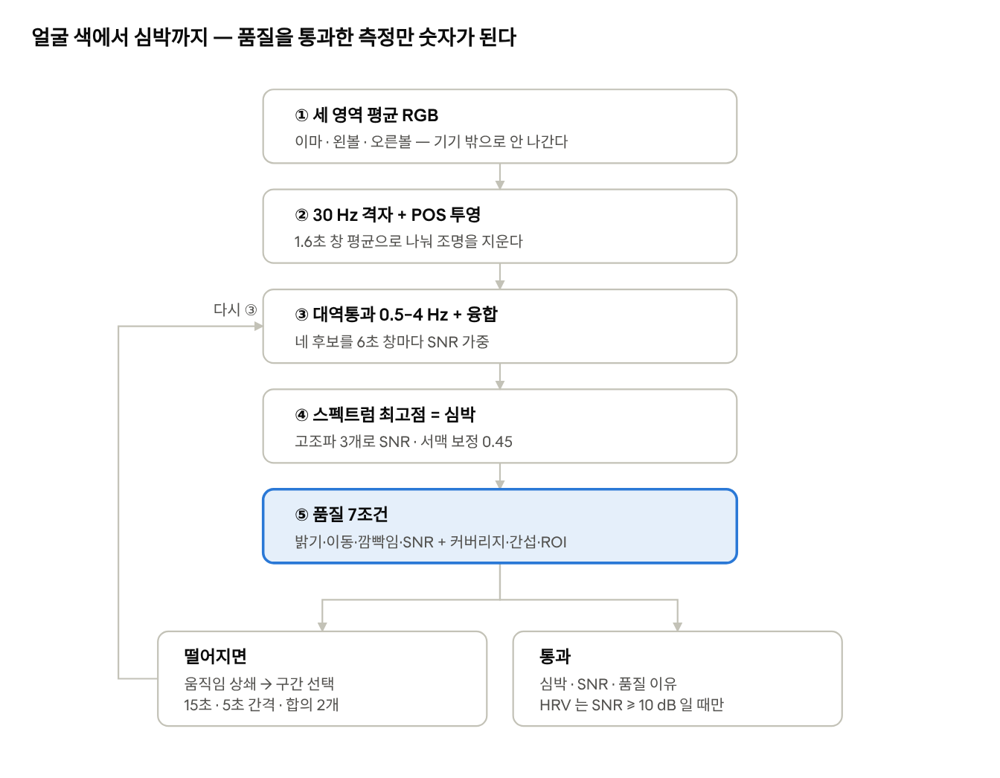

친구는 안색이 눈에 띄게 나빴고 컨디션도 오래 안 좋았다. 백혈병이었고, 치료 시기를 놓쳤다. 사람은 자기 컨디션을 말로 정의하지 못하고, 안색은 매일 거울로 보기 때문에 오히려 어제와 오늘의 차이를 못 잡는다. 그래서 진단이 아니라 기록으로 좁혔다 — 오늘이 내 평소와 다른가를, 매일 같은 방식으로 기계가 재서 남겨 둔다. 아이폰 전면 카메라만 쓴다.

webapp/face/src/pipeline/ · 전부 브라우저 안에서 돌아간다. 서버는 계산하지 않고 숫자 12개만 받는다.
각 단계는 앞 단계가 못 지운 것을 지운다. 마지막 품질 7조건은 값은 나왔지만 믿을 수 없는 경우를 걸러낸다. 신호 세기가 4 dB 를 넘은 창은 평균 오차 0.2 bpm · ±5 bpm 안 100%, −2 dB 아래는 16.3 bpm 이다 — 측정이 자기가 맞았는지를 스스로 안다.
| 심박 정확도 | 품질 통과분 평균 오차 2.62 bpm, ±5 bpm 안 92.3% — 앱이 실제로 돌리는 엔진을 공개 데이터 MCD-rPPG 20초 창 597개에 돌린 값 |
| 측정 시간 | 중앙 10초 → 7초, 평균 14.2 → 8.9초. 정확도와 거짓 수락(0%)은 그대로 |
| 품질 통과율 | 78% → 95% (기준 완화 + 구간 선택). 맥 없는 입력의 거짓 통과는 세 조건 모두 0% |
| 개인 기준선 | 사람끼리 비교하면 AUC 0.55 — 우연 수준. 같은 사람의 평소와 비교하면 62% (p = 0.027) |
실기기 2주 운용 전이다. 조명 · 기종별 오차는 아직 모르고, 공개 데이터에 랜드마크가 없어 품질 4조건 중 머리 이동은 검증되지 않았다. 지금 엔진(2.62 bpm)은 비교 구현 rPPG-Toolbox(0.56 bpm)보다 아직 못하다 — 대신 떨어진 이유를 말해 준다. 이 격차가 다음 과제다.
본 서비스는 의료기기가 아니며 질병의 진단 · 치료를 목적으로 하지 않는다. · 데이터 MCD-rPPG (Egorov 2025) · WESAD (Schmidt 2018) · 방법 POS (Wang 2017)